别来无恙？ @ Nov 28, 2016
南京的夜冷得冻手，为了找一个视频想到中国茶上来，看到往日的blog，以及各位的留言，，心里暖暖的。对自己目前的生活充满了不确定性，不知从何下笔。眼看又将年末，这一年和上一年相比变化不算大，一直往前努力地走着，无法回头。今年一位小我两岁的老朋友去世，从发病到离去一个月不到，肺栓+白肺，据说存活率很低。这件事对我触动很大，希望我们爱惜身体，珍惜健康的每一天！
南京的夜冷得冻手，为了找一个视频想到中国茶上来，看到往日的blog，以及各位的留言，，心里暖暖的。对自己目前的生活充满了不确定性，不知从何下笔。眼看又将年末，这一年和上一年相比变化不算大，一直往前努力地走着，无法回头。今年一位小我两岁的老朋友去世，从发病到离去一个月不到，肺栓+白肺，据说存活率很低。这件事对我触动很大，希望我们爱惜身体，珍惜健康的每一天！
好久不见，刚买了PRO3，淘汰了之前慢得跟蜗牛似的笔记本，这也许就是我此时过来SAY HELLO的原因？
又一年即将过去，这一年与上一年貌似也没有什么区别，五年计划十年计划也挺奢侈的，到了我这个年纪，一面是过得没有方向感，另一面是具有无限可能，嗯，一枚硬币的两面。对现状不够满意，不知道的确是现状不够理想，还是我自己的心理问题？总得往前走，要么忘了自己，要么忠于自己。
还会时不时出现焦虑感，对方语速快，动作大，步伐砰砰作响，甚至看到网上一群人扎堆的欢天喜地，各种社交各种美食各种喋喋不休各种热闹，这都让我焦虑。这两年渐渐接受“外面没有别人，只有你自己”这一恒古不变的真理。
凌晨，睡不着，想回到中国茶来看看，就象回父母家的感觉。微博微信都在用，可都是碎碎念，呈现好看有趣的，娱乐自己和大家，就象租房子住，不属于自己，总有种某天就会撤离的感觉。只有这里会有家的感受。十一年了，我乘着时光机一下子穿梭到近四十年华，十一年，却仿佛昨日。那些生命中的过往，仍然历历在目，清晰如初。雪下过，停了。淋了雨，放晴几日，晒晒太阳，暖一暖。。。等待这个冬季的到来。
不再如机器人一般工作的时日，才发现自己不是一个有趣的人，或者不是一个自己期望的那么有趣的人。发现原来有趣的部分是需要有人带动的。有人不需要旁人的作用，打游戏听音乐收藏碟片看电影喝喝小酒画画写大字。。。自顾自沉浸在趣事中。而我，一个人的时候把所有爱看的节目、电影，集中看了个遍，然后一下子落空了。有许多生活计划，健身的，学习英语的，画画的，摄影的，这些计划耽搁着，等待周遭静下来，空出来。挺可笑，上班时等待这一刻，这一刻又在等待哪一刻？
我以前是个开朗健谈的人，这几年浮躁浅薄还是有的，却渐渐不爱交谈，闲扯。看到旁人为一些话题谈得津津有味，乐此不疲，而自己不愿参与时，会产生质疑：人家是正常的，还是你是正常的？越来越不爱与人交往，害怕关系亲近。很多时候，我宁愿一个人呆着，希望被所有人遗忘。在过频过密的社交状态下，我不是我。我喜欢松弛状态下的自己，不为情谊，不碍于情面，说废话，做累人的表情。忽然想起去年回国飞机上，身旁一位谢尔顿式的光学博士，十几个小时的航程中他有八九个小时随时抓住我说话，说一些我听不懂的他认为有趣的光学实验，说他太太小孩，说他们的海外生活。。。另一次航班身旁坐着某知名大学商学院访问学者，话多到让人头晕。。。有时我会认为内分泌失调的人才会喋喋不休。因为某种心理缺陷，会急切需要在聊天中得到旁人关注和认可。或者是怕冷场？过去我也这样，生怕被忽略了。留意一下很多人都这样，这是正常人状态吧？那么，我是不是已经变成一个没有人要的老古怪了？
8月中旬看了孟京辉的话剧《活着》，最初是在《收获》杂志上看到余华的小说，之后看过电影，很好奇这么沉重严肃的小说如何导成话剧？七月一日在网上预订话剧票，发现全部售罄。。。上海的消费能力真是了得，文化消费也如此厉害，所幸托人买到了。朋友说在北京见过他夫人廖一梅，说生活中不会喜欢这样的女人。有时，才华和人品是两回事？！
上海艺海剧院对面卖苏州汤包的小店，生意火爆，进剧院前在那里解决的晚饭，里面乌泱泱都是人。剧院的停车场已经没有位置，车停在对面大厦的地下车库，离开时付了40元的停车费，想起南京大商场地下车库还有2.5的停车费。。。这就是上海。
之前看过黄渤的《疯狂的石头》、《人在囧途之泰囧》、《厨子痞子戏子》，还是看过这部话剧之后对他渐生好感。虽然有人说他演的不如葛优，可我就是喜欢他这种匪气十足的调调。袁泉在舞台上好瘦小，声音很有魅力，表演细腻，不过因为身形过瘦，肢体语言欠丰满。我没有戴相机，因为场内不允许拍照，表演中没有人打手机、手机铃声响起或人声嘈杂的现象，总体素养挺好。
最后，在我过去的生日那天，送给我至亲至爱的人们：“我要在你平庸无奇的回忆里，做一个闪闪发光的神经病。”

凌晨三点在沙发上醒了。
想到自己的生日就快到了，这一个月里有多少和我一样过生日的人？无论如何，都生快啊！狮子座与狮子座总是犯冲的，因为他们都太有主见，脆弱的自尊心让他们在人前不愿低头，受伤了会象大猫一样躲起来舔伤口。这个岁数会觉得狮子座是个特傻的星座，就像前同事说我＂可以吃亏，但不能受气＂，反过来才好。我想我会在生日这天端起落灰的单反给自己拍几张照片，去看场孟京辉的话剧，光光说自从看到孟在微博上对一位女性破口大骂之后，便不打算花钱看他的作品了。嗯，我想我可以把作品和他这个人分离开来对待。要知道七月初「活着」的话剧票就已售罄，托了人才买到，不去看太可惜了。
这个夏天的高温就要过去，晚上散步时一阵风吹过，情不自禁大喊：＂秋天来了！＂原来我是在秋天出生的孩子。。。
最近读Jane写的文字，一直喜欢她写的东西，买过她的一本小说「一直很安静」，我们第一次见面在纽约第五大道上的一间餐厅里，她当时辞职在哥大留学，上海姑娘，但不是典型的上海姑娘。她坦率、时尚、温柔、知性，接触到现在才略微体会到她是那种心里很在乎，表面却看不出来的性格，如她所说的那样。让我印象深刻之处在于她的文字不是词藻华丽，而是有生活和经历，没有文青们的矫情劲儿。回归到她近期的文字，其中一篇里的这句＂世界上，总是有这些人，与模式化的生活对抗着。他们赋予他人勇气，过自己真正中意的生活＂，读到时我莫名地笑了，我想这些人主观上并未＂抵抗＂，而是不知不觉地折腾到现在，心里不平静，折腾永不会停止？相信很多人都有不平静的时候，只有少数人有勇气折腾？
分享她的原文如下：
Izaskun是我在哥大认识的西班牙姑娘。她今年38岁，有一双琥珀色的眼睛。她的名字不容易记，她说，那不是一个常见的西班牙名字。我们在哥大同上一个写作课程，她在西班牙是一名economist，因为西班牙经济变差，她想通过在哥大的深造获得伦敦的工作机会，顺便，在纽约住上一阵子。
Izas前不久在Linkedin上发布了自己的新工作动态，Member of the Community Recovery Team( Hurricane Sandy Long Term Recovery Program Intern),我于是得知，她至今还在纽约。今年的H1B签证很不容易申请，我们也都错过了在4月1号前申请工作签的时限，我随意地放弃了，而Izas，执着得想要留在纽约。于是她日日夜夜寻找工作机会，经过一轮轮尝试，她才渐渐接受获得工作签证非常难的这个事实（期间，这姑娘的心情绝对就是过山车），她最后打算去伦敦找工作。即将离开纽约前，Izas获得了红十字会的面试机会。她的希望又重燃。
这学期结束后，我如期去西部玩了一圈，接着就回了上海，也渐渐减少了与她的联系。直到看到她在linkedin上的消息，我写了个email给她，又获得了她热情洋溢的回复。
红十字会的internship也即将要结束了，她打算继续寻找新的工作机会或者去伦敦。Izas有个小她5岁的拉丁男友，人在西班牙。他们俩已经异地了很久。而Izas跟我说，我要呆在纽约！
瞧瞧，她38岁，依然把帅哥男友扔在西班牙，肆意地在纽约折腾着。可是，在纽约的那些人们，谁不是呢？Carrie40岁的时候，开始与Berger约会，她对着她的姐妹们说，我好像又回到了35岁那个清涩女孩子的时代！国产婆妈电视连续剧，真的是把本应该还能肆意折腾的姑娘们连累坏了。
Izas时常跟我说说家常。比如，她38岁生日当天，她的小男友就把他弄哭了，说了句不可理喻的话，扫她的兴。比如，她觉得她住在upper west side太贵了，如果要在纽约呆得久一些，必须搬去一个月租不超过1000美金的地方。。。看到她，我就想起我在波士顿结识的巴西女生Aline Martini，她以前在圣保罗的KPMG工作，到了30岁，也跑到美国来折腾，每天都笑得很大声。
单身的A同学跟我说，他很爱小孩子。所以，35岁前的某一年，也许会中断工作，离开北京，通过科技手段，去生一个孩子。然后，陪伴孩子长大。A同学特别平静，没觉得自己惊世骇俗。我为他的平静感到开心。
世界上，总是有这些人，与模式化的生活对抗着。他们赋予他人勇气，过自己真正中意的生活。其实38岁放弃economist的头衔去做intern有什么了不起？我们在应该玩的时候，日日苦读。在可以玩的时候，为房子、结婚所累。在懂得玩的时候，无法放弃太多。或者，那些女孩子们因为年过30，忘记了自己的优异和独特，只为一个所谓的归宿。
应该沉迷于你所中意的生活。向琥珀色眼睛的、爱折腾的Izas姐姐学习！
差不多休息了一年，快节奏机器人般的生活总算停止了，惯性在逐渐消逝中，心理上的轻松使得浑身肌肉也放松了不少。休息期间，自然有各种不适应，一个忙惯了的人忽然没了任何压力，会有失重感，这一年一边调整身心，一边寻找更让我舒服的方向，在众多不确定中倒获得了更多选择的可能。这时候会告诉自己，不要紧，不要急，慢慢来。这一年能放下的不仅是原工作，同时也淡出社交圈，常常联系的是特别亲密的认识了许多年的知己。不愿意将太多时间和精力消耗在泡沫人际关系中。
现在体会到“生活”是需要其他事物来平衡的，天天宅在家里吃喝拉撒睡，那不是生活，那应该只是活着吧？生活需要很多色彩，其中工作可能也是色彩中不能忽略的一种？最佳工作状态不要那么忙，但也不能太闲。目前流行的工资计算方式不是月薪、年薪，而是时薪。如月入4000元工作80小时，折合时薪为50元；如月薪上万工作320小时，时薪只有31元左右。所以看一份工作是要看性价比的。仪式感也是生活不可缺少的一部分（文艺青年们最擅长的），譬如某人准备去睡觉了，寝具是全套的MUJI纯麻床品，每日都被它自带的真纯朴实的隐喻感动，在仪式感的高调中沾沾自喜地入梦。嗯，这很清楚地诠释了仪式感吧？
这一年胖了十几斤，面色红润起来，同时之前的衣服多数穿不上或穿不出效果了。前些时候称体重115，接着112，今天称110斤。并不喜欢骨感美，对于一个怎么吃都吃不胖的人，忽然有一天圆润了许多，微胖界的感受其实挺妙的。
这一年发现不工作的人并不少，某某效应？嗯，离职的恐惧感多数是自我意淫，人活着并且有质量的活着的方式除了朝九晚五还有很多，换个活法，未尝不可，是吗？特希望自己有一天真的能达到云淡风轻的境界。有人说你变了，不再是以前的你。是啊，不变的是妖精。这几年不认同理想主义教育，看事物的角度理性了许多，体会到作为一个独立的人的存在感。当然变化中也有令自己自责、内疚和困惑的部分，等想明白了再说。
上周女友用手机拍摄的，大概半年都没有用单反，彻底被iPhone毁了。
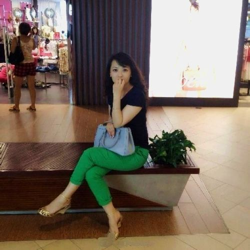
住在纽约曼哈顿midtown第42街中国驻纽约领事馆，每天早晨那些个做体操拉横幅的大妈大婶们准点来门前报到。12月底的纽约风力很大，异常寒冷，流感肆虐，此后感冒，接连咳嗽三个多星期才好。对于很多人而言，midtown（中城）就是纽约，因为这儿有第五大道，时代广场，中央公园，卡内基音乐厅。第六大道上是各大公司的总部，正因如此，这儿的消费也都是天价，餐厅、商店的价格都极致地发挥了资本主义。
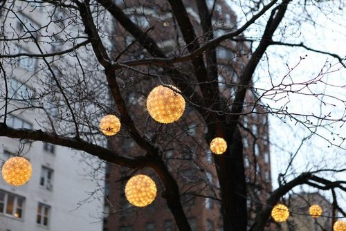
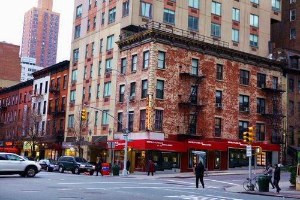
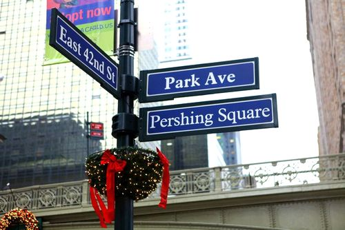
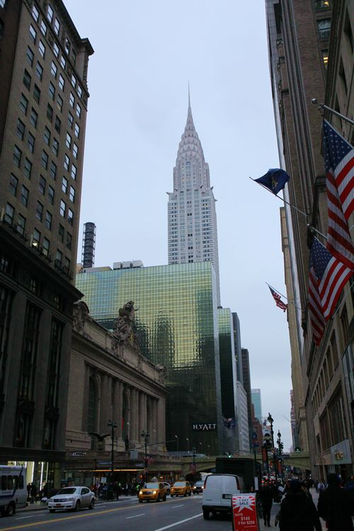
纽约Grand Central Terminal（中央车站），从1913年沿用至今的古建筑，每天进出550列车，50万乘客通过这里往返于纽约上州（up state）沿线城镇。曼哈顿的房价非常昂贵，一些人会在郊外甚至到新泽西州买房子，上下班乘火车，花在路上1-2小时属正常。
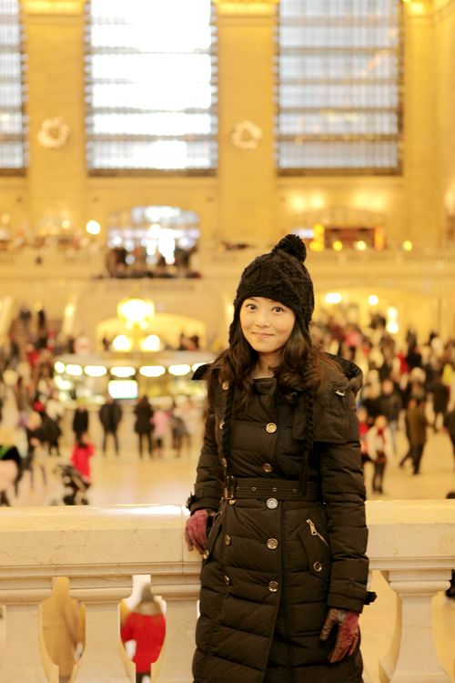
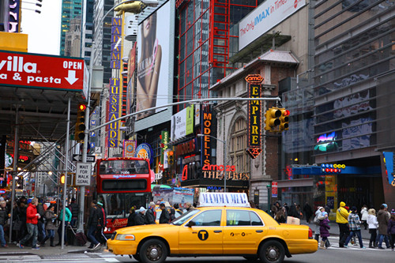
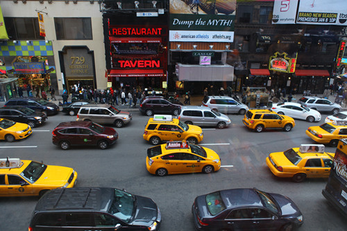
这座无数次作为美国都市影视剧作品背景的城市，在圣诞节前后塞满了来自世界各地的游客，我那一点点旅行者的热情也被无情的风雪完全浇灭了。到了这儿才知道，这里没有谁是真正的纽约客，多元文化相融合的城市，有北京和上海的影子。
又是辞旧迎新之际，忽生厌恶之情，厌恶一切有界限的东西，但却无法拒绝，这是矛盾之处。厌恶了在这个时候大家都说些祝福的话。厌恶终点或起点的归纳。
一个人在家，空气清冷，毕竟冬天到了。这样也好，安静下来可以写点什么。
11月中旬辞职，之前一直病休，自去年年底开始几乎每天迟到，颈椎的问题，睡眠的问题，焦虑的问题。陆续请病假，领导说要不你先病休半年吧。期间，婉拒公司提供的各种新岗位，希望就这么病休下去。半年后权衡各种状况，我选择了辞职。这期间，生活也发生了很大的转变，纠结有过，后悔有过，彷徨有过，失落有过...有关辞职，好多年前我曾无数遍地在心里演示过，我以为我会满心欢喜地离开公司，然后回头痛斥公司的种种不是，可是最终公司对待我的态度让我心存感激，还有一些人情味。
看到朋友转载的文字：“荣格非常重视人的后半生（中年之后)，他认为这是人类走向个体化的重要时期。中年之前，人们只是一味地追求与现实世界的联系，往往无暇顾及自己的内心世界，在生活中完全受自我支配。当社会地位、工作、生活和梦想到达一定程度的稳定时，人们就会开始思考人生的意义。这就是中年时期。”
中年也可以任性地活一次吧？短短人生数十载，时间“嗖”的一下就没了。算计着过，虚伪地过，谦卑着过，按部就班地过，循规蹈矩地过，任性也是一种过法。我爱现在的自己，甚于爱青春期的我。就让旅行开始吧。
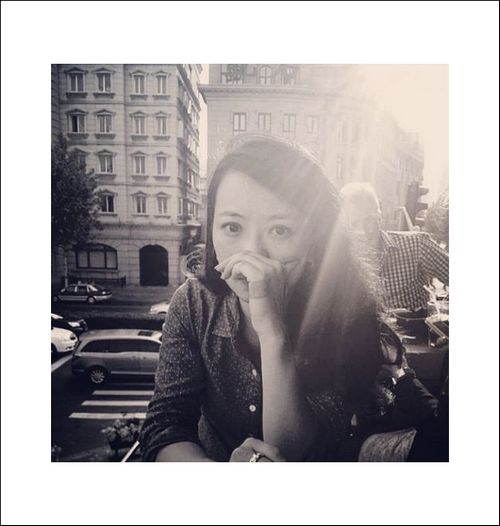
如果只有一样东西死后可以带走，我只要情义。
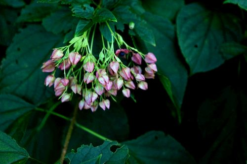
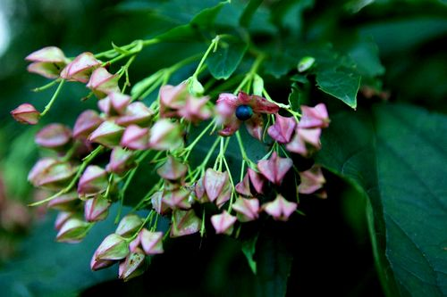
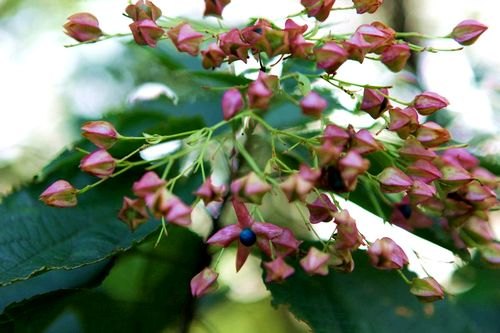
Previous 1 / 210